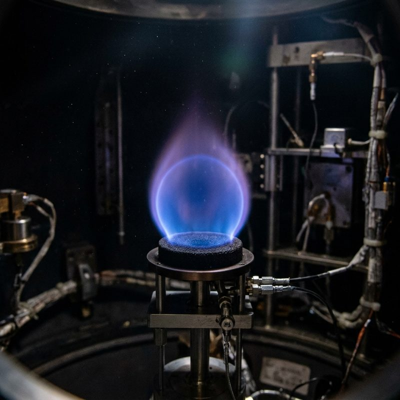

EXPLORE COMBUSTION.
THE ARTEMIS FIRE ARCHIVE.
PyroNull helps you define a mission scenario, discover indexed combustion and fire-safety investigations, check research relevance, and find evidence gaps for human space-exploration environments.

Mission intelligence workflow
Scenario → Discover → Relevance → Gaps → Report. Your scenario stays available across these pages for the current browser session, so you only enter it once.
Connection status
API: NOT CONNECTED
This build contains the interface only. Results appear when the backend is connected; no placeholder research data is shown. “API reachable” never means the data is NASA-verified.
Read this first
Mission Workspace
Choose a mission profile and configure the scenario used by every other page.
Investigations
Research catalogue view of indexed investigations that match the active scenario. Not a general NASA search engine.
| Title | Objective | Platform | Conditions | Source | Provenance |
|---|---|---|---|---|---|
| No discovery run yet. Select “Discover investigations” to list records for the active scenario. | |||||
Source links appear only when the backend returns them. Provenance (verified, partially verified, unverified, invalid, demo) appears only when provided and is never inferred.
Relevance Analysis
Explains how indexed investigations relate to the selected mission scenario.
Research Gaps
Missing evidence or weak coverage in the currently indexed records.
Burn Time Estimator
Experimental PSI-159 burn-time regression model. Separate from Mission Intelligence relevance.
Estimate
Model evaluation metrics
Recorded in the model README. Evaluation metrics, not a guarantee of individual prediction accuracy; the results are modest.
Mission Reports
Assemble the returned evidence, limitations and gaps into one report.
Mission scenario
Not generated yet.
Investigations
Not generated yet.
Ranking
Not generated yet.
Evidence
Not generated yet.
Limitations
Not generated yet.
Research gaps
Not generated yet.
Data & Model Info
Dataset provenance, the PSI-159 model, and the limits of both.
Dataset provenance
Source links to NASA PSI / NASA NTRS are shown only when the original source URL is known and verified.
Provenance labels
Shown only when the backend supplies a status; the interface never infers one.
What this interface does not claim
- Research relevance is not fire risk, ignition probability or habitat safety.
- The burn-time estimate is not a suppression time, a fire-duration guarantee or an operational safety prediction.
- An empty result means nothing matched the indexed dataset, not that no research exists.
- A gap describes the indexed dataset, not the wider literature.
PSI-159 burn-time model
Input: eight features, in this order. Output: predicted burn time in seconds. Recorded README metrics: MAE ≈ 23.08 s, RMSE ≈ 36.14 s, R² ≈ 0.1575.
| # | Feature | Unit / meaning | README sample |
|---|---|---|---|
| 1 | Flame Type | Categorical | Normal |
| 2 | Fuel | Categorical | 30% ethane |
| 3 | approx p | bar | 0.506650 |
| 4 | Tad | K (adiabatic flame temperature) | 2483.47 |
| 5 | HC burnrate | mg/s | 0.75 |
| 6 | O2 flow rate | mg/s | 0.85 |
| 7 | XO2 | Oxygen mole fraction | 0.15 |
| 8 | Xf | Fuel fraction | 0.300 |